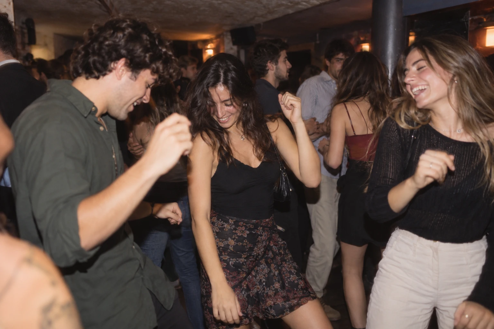

An image is approved only after a teammate who did not make it has checked it with the review list in the playbook. Reviews are written in 03 - Deliverables/mp1/images/README.md.
- File
- corners-city/05 - Brand/references/ref-02-bilbao-bench-zubizuri.webp
- Prompt
- Master prompt template v2.1. Scene: two students on a bench by a river, one reading a paperback, one eating a sandwich. Place: Bilbao riverside with the Zubizuri bridge. Afternoon, warm natural light.
- Tool
- ChatGPT (Go), image generation
- Made by / date
- Federico · 19 Oct 2026
- Reviewed by
- Jenna · 25 Oct 2026
- Status
- Approved as a brand reference. A small logo-like mark on the sandwich wrapper was found on 26 Oct 2026: do not publish this image as it is. Check rights for each published use.
AI-generated with ChatGPT (Go), 19 Oct 2026.

- File
- corners-city/05 - Brand/references/ref-03-club-dance-floor.webp
- Prompt
- Master prompt template v2.1. Scene: three friends dancing together on a club dance floor, with a crowd behind them. Place: a small night club with a low ceiling. Night, club lighting.
- Tool
- ChatGPT (Go), image generation
- Made by / date
- Federico · 19 Oct 2026
- Reviewed by
- Jenna · 25 Oct 2026
- Status
- Approved as a brand reference. Check rights for each published use.
AI-generated with ChatGPT (Go), 19 Oct 2026.
- File
- corners-city/03 - Deliverables/mp1/images/chatgptPIC.png
- Prompt
- Master prompt template v2.1. Scene: two students on a bench by the river, one reading, one eating a sandwich. Place: Bilbao riverside with the Zubizuri bridge. Afternoon, warm natural light.
- Tool
- ChatGPT (Plus), image generation
- Made by / date
- Jenna · 23 Oct 2026
- Reviewed by
- Federico · 25 Oct 2026
- Status
- Approved. Check rights for each published use.
AI-generated with ChatGPT (Plus), 23 Oct 2026.